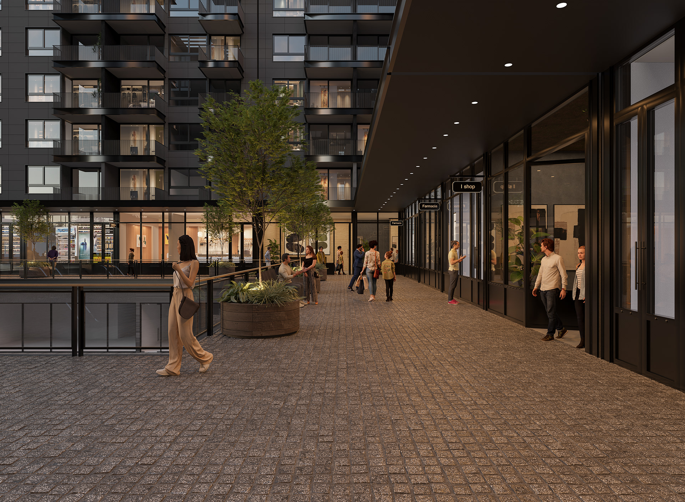
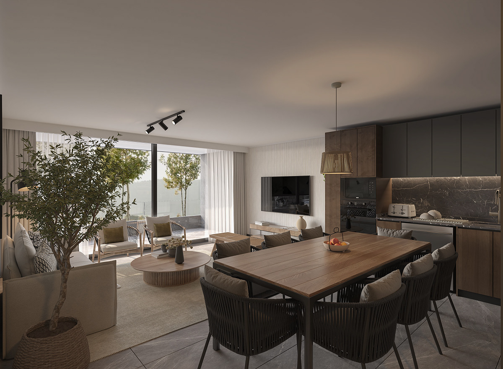

DANIEL ABECASIS · ARCHVIZ
Arquitectura,
antes de existir.
La luz, la materia y la atmósfera.
Una forma de mirar lo que está por venir.
01 / PORTAFOLIO
Espacios en perspectiva.
Una selección de arquitectura, interiores
y espacios comerciales a través de la imagen.
Más proyectos · 2022 — 2025
ARCHIVO / GALERÍAS COMPLETAS

DEPARTAMENTO MAITENCILLO / 202502 / MI MIRADA
Más que un espacio.
Una atmósfera.
La arquitectura también se cuenta con imágenes. Una luz que entra, la textura de un material, la relación entre el interior y su entorno.
Mi trabajo en visualización arquitectónica busca dar forma a esa experiencia: acercar un proyecto a la manera en que podría sentirse habitarlo.
03 / SOBRE MÍ
Daniel Abecasis
Fritis.
Renderista 3D especializado en visualización arquitectónica, con más de ocho años de experiencia creando imágenes para proyectos de arquitectura, interiorismo, desarrollos inmobiliarios y espacios comerciales.
Trabajo con estudios de arquitectura, diseñadores e inmobiliarias para transformar planos, conceptos y proyectos aún no construidos en imágenes claras, realistas y expresivas. Mi objetivo es comunicar el valor, la atmósfera y la intención de cada diseño.
Actualmente trabajo como renderista en Tierra Urbana, soy socio fundador de a3dstudio y colaboro de manera independiente en proyectos de visualización arquitectónica.
3DS MAX · CORONA RENDER · PHOTOSHOP
04 / CONTACTO
DANIEL ABECASISCada imagen comienza con una idea.
Démosle forma.
Cuéntame sobre tu próximo proyecto.
Hablemos de lo que quieres visualizar.